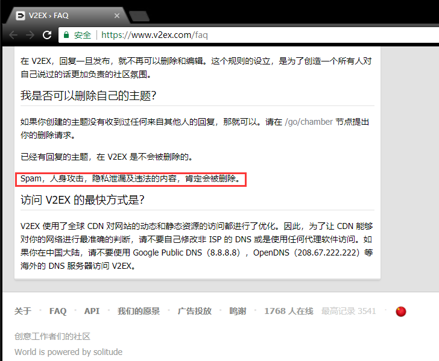

V2EX 是一个什么样的地方？
• 这里大量的成员热爱编程和图形设计
• 这里有关于虚拟世界话题的讨论
• 也有真实世界的
• 信息量的多少在这里是始终重要的
• 作为立场，我相信这个世界在持续变得更好
谢谢大家的举报。
- 相关的所有主题、关键字、注册手机号已经全部处理。
- 针对这类 spam 会加入一些特殊规则，现在正在实施。
- 这次 spammer 一共使用了 5 个手机号，现公布如下：
- @diyezhong - 15773432594 - 登录 IP 112.74.214.166 - 注册邮箱 diyezhong246147@163.com
- @awo721001 - 15526845694 - 登录 IP 113.116.156.183 - 注册邮箱 awo721001@163.com
- @chuipujiang - 15590019049 - 登录 IP 113.116.156.183 - 注册邮箱 chuipujiang710157@163.com
- @yipojia450247 - 13136401739 - 登录 IP 113.116.156.183 - 注册邮箱 yipojia450247@163.com
- @xinqianxian93808 - 18824300601 - 登录 IP 113.116.156.183 - 注册邮箱 xinqianxian93808@163.com
1
mokeyjay 1 天前
还知道发到 QNA 节点里，怕不是 V2er 干的好事
|
2
oott123 1 天前 via Android
♥ 17
其实这个故事告诉我们，手机号防 spam 并没有什么效果，因为黑产的手机号成本也就一两毛，而这极大的提高了正常用户的门槛——考虑社区属性，大部分人不愿提供手机号注册。
|
 |
3
ovear 1 天前
♥ 10
就算如此，也不是泄露他人隐私的理由，谁知道会不会对这个号码的后续机主造成影响。
|
![]() |
4
zjp 1 天前 via Android
看发帖记录，都是一个小时内几条关键字相同的帖子，这不是可以自动判定 spam 吗
|
6
artoostark 1 天前
@ovear
你这什么脑回路，还没到后续机主手里了。
|
7
artoostark 1 天前
♥ 6
@Livid
我的社区采取的预防措施：注册关闭，邀请才能注册。如果不想等邀请，那就花钱把，几十块而已。
可以试一试，V2EX 不小了。继续开放注册，垃圾推广会随着名声的上涨而持续增加。 |
8
qsnow6 1 天前
邀请制可以尝试，类似于赚客吧一样，只能论坛本身内容有足够的吸引力。并不会阻挡正常用户进来
|
9
phoenixlzx 1 天前
♥ 1
@oott123
手机号似乎是国内监管要求。
所以不妨： * 国内社区论坛的老办法，堆人力。邀请多一些品行和安全意识可靠的人来做权限低一些的版主，错开时间差的话效率会很高。起步容易，但是需要持续的人力管理付出。 * 互联网人的办法，使用机器学习判定 spam。这需要单独开设一个通道处理各种误报，否则很容易玻璃心碎一地吧。以及，门槛高起步会比较困难。 虽然个人私心希望论坛放在国外甚至保持一个被墙的状态，不过就目前的情况来看我觉得大概不会有什么差。 |
10
xiaowangge 1 天前
花钱注册，收入可以捐出去，比如 维基百科、开源项目。
|
11
SourceMan 1 天前 via iPhone
说邀请注册的，考虑到本站的商业化之路吗？
单凭情怀并不是长久之计 |
12
saran 1 天前 via Android
所以上午拒绝访问就是这机器人的锅咯😄
|
 |
13
iConnect 1 天前 via Android
♥ 3
曝光的这几个“账号”对 spammer 起不到威慑作用，本来就是 fake number，最佳方法还是调整 ban 帐号的阙值，不用人工监控，找到正常用户和 spammer 之间的最佳分界线。
|
14
Livid
1 天前
♥ 1
@phoenixlzx
如果是在 2018 年做一个新站的话，服务器肯定放美国，然后支持 Google 登录。
|
15
Cu635 1 天前
♥ 1
@Livid
可是那些“批量注册假账号，然后刷屏卖假文凭的人”的手机号不一定是这几个。 不过 V 站本来就是从国外搬回来的吧。。。 @artoostark @xiaowangge 不要，花钱注册的话到时候有二道贩子，更不好管。 而且一旦花钱注册，用户的心态就变了，什么都是理所应当得了。到时候 spam 直接花钱注册，封了就说是我花钱进来的，发帖理所应当。 @SourceMan 商业化可以接广告，类似于 google ad 那样的形式就不错，不招人烦。 |
|
16
ovear 1 天前 via Android
♥ 2
@artoostark
你的脑回路也挺清奇的，一上来就攻击别人。你怎么知道这不是黑产实名的？
@Livid 请问如何证明，机主，邮箱拥有者是“批量注册假账号，然后刷屏卖假文凭的人”。这样子乱扣帽子，反而是最奇葩的。作为一个程序员，离散数学最基础的辑推断应该过关吧。 |
|
17
ovear 1 天前 via Android
♥ 3
另外，请贵司遵守当地法规
《全国人民代表大会常务委员会关于加强网络信息保护的决定》 http://www.miit.gov.cn/n1146295/n1146557/n1146619/c4700513/content.html 二、网络服务提供者和其他企业事业单位在业务活动中收集、使用公民个人电子信息，应当遵循合法、正当、必要的原则，明示收集、使用信息的目的、方式和范围，并经被收集者同意，不得违反法律、法规的规定和双方的约定收集、使用信息 八、公民发现泄露个人身份、散布个人隐私等侵害其合法权益的网络信息，或者受到商业性电子信息侵扰的，有权要求网络服务提供者删除有关信息或者采取其他必要措施予以制止。 |
18
ryd994 1 天前 via Android
可以学草榴
积分太低的用户限制发帖回复频率 |
19
ryd994 1 天前 via Android
还有，举报很多的，先隐藏，等人工审核
|
20
Livid
1 天前
♥ 4
|
21
Livid
1 天前
|
|
23
ovear 1 天前 via Android
♥ 1
另外就是，举报是你的权利，也是我的权利。不知道工商局和 12377，以及网络警察局是否受理该类问题呢？
|
26
pzhang 1 天前
其实这几天类似的垃圾信息再很多论坛都有刷屏。
|
28
Technetiumer 1 天前 via Android
♥ 3
|
29
fuxiaopang 1 天前
|
30
fuxiaopang 1 天前
@ovear
而我这个链接里仅仅是因为一个用户取得名字里面有不良信息的关键字
|
31
hn 1 天前 via Android
@Technetiumer
你和山寨头子讲道理？搞笑
|
32
rogwan 1 天前
@fuxiaopang
你网站的 URL 链接里，用户取得名字里面有不良信息的关键字 - 是涉黄、涉政、还是违反别的要求？那个用户的身份验证信息也是伪造实名的吗？
|
33
skksdd 1 天前
@Livid
很多时候，你说的是什么不重要，重要的是对方想听到什么，或者说，对方理解范围内到底有什么。“你说的好有道理，但是鸽子为什么这么大啊？”
很多时候，对话都是不是“交流”，而是用试图交流对阵试图获胜。而且你赢不了…… |
34
hxd15110 1 天前
♥ 38
帮 @ovear
回一下，他的号已经凉了。以下是原文
----------------------------------------------- @hdjs5264 @pzhang @summerwar @Technetiumer @fuxiaopang 感谢各位同学跟我讨论这个问题，但是不用再 @ 我了，我的账号已经被站长**封**了，IP 也都凉了。只能说，既然站长的态度是如此，至于爱扣帽子的事实，大家也看见了。 所以我也不方便再次讨论了，欢迎有兴趣的童鞋，自己在下面，或者另开一贴讨论。 @summerwar 同学说 @Technetiumer 关于站长所谓的“土皇帝”制，当然是可以啦，他的确有这么做的权利，只要能承担后果，任何事都可以，就算是未违反当地法规，也是可以的，不是么。你看他封我号，就没违反，但是泄露用户隐私，就违反了法规了。 另外我还是劝 @Livid 自己冷静下，一口一个垃圾，一口一个中二病这种扣帽子的行为，真的很难看，过两年自己看着也不舒服。封我顶多是吃相难看点，违反法规就不是这么简单了。 我讨论这个问题最初的目的，就是想了解一下，V 站这个论坛对“个人隐私”的重视程度而已，还有管理员的态度。一个管理员，带头泄露别人的隐私，这还是很少见的。 至于到后来，说"XXX 没有隐私”这种论调更是始料未及的，想了想也是正常，毕竟这的确跟大家说的一样，只是“一个人的私有网站”，我们的确不能要求每个人都有正确的三观，但是每个人还是要为自己的所说所作负责的。 在 V2EX 这个自诩“创意者们的聚集地”，我以为站长本人在西方国家，接受多年西方思想熏陶，想必是对隐私特别重视，有自己的一番见解的，毕竟在网站的各个地方都存在着“重视隐私”、遵守当地法规的言论，比如说 1)注册页面 web.archive.org/web/20180201194343/https://www.v2ex.com/signup 2)FAQ 页面 web.archive.org/web/20180202091847/https://www.v2ex.com/faq  3)About 页面 web.archive.org/web/20180201200049/https://www.v2ex.com/about 插一句题外话，我个人建议站长尽快删除上述相关内容。 再来说说这件事本身的问题，就如 @Technetiumer 所说一方面是给后续机主造成不便，万一这些机主，或者之后的机主是无辜呢？ 第二点就是隐私问题，这是一个比较重要的问题，毕竟前几天百度还在风口浪尖。这点不用说，张贴这些信息肯定是违反法规的，相关法规在上面已经给出。 至于站长后来说，这些 spanner 没有隐私，更是无稽之谈。作为一个站长的确可以在自己的站点上为所欲为，自己能承担住后果就好了，就算是违法的事也能做不是么？ 说到 Livid 站长那套，我觉得这些人是 XXX，所以他们没有隐私，所以我就可以公布原本是他们隐私的内容，披露他在本站的信息。 在提醒下各位同学们，因为你们随时也有可能因为各种“理由”然后被公布。在站长这样一种不尊重隐私的态度下，小心一点为好。 有些同学肯定也是不同意站长那一套的，但是毕竟人在屋檐下，不得不低头，就没有发声，也是可以理解的。 但是我个人会通过合法的手段维护我自己的合法权益，至于我这种较真的行为，算不算“中二”，我个人不太关心。 至于 @fuxiaopang 同学说的，处理的问题，麻烦这位同学仔细看一下帖子内容，本次的争论点在“隐私”，而不是处理广告。处理广告这种事情很正常嘛，毕竟是维护社区环境，没有人会反对。但是泄露隐私，又是另一码事了。 我个人觉得，废了一个号，让同学们看到站长的态度，能够提醒目前正在使用 V2EX 的同学们注意自己在这的隐私，是很值得的。 最后，希望站长自己能够承担自己决定所带来的后果。 |
35
Zora 23 小时 57 分钟前
这帖。。国内干公关的。。都不敢这么放信息。。。
|
 |
36
heww 23 小时 36 分钟前 via iPhone
♥ 1
上面的长帖看着很有道理，和那句名言已经替我说话了一样。
但是，公布出来的是事实的话也是侵犯隐私吗？如果是的话，那些网上的查询手机号是不是推销的、是不是诈骗的就也侵犯隐私了？ 腾讯那些大厂的手机号归属地查询这类 app 呢？ |
37
BlueFly 23 小时 34 分钟前
|
39
BlueFly 23 小时 20 分钟前
♥ 1
@heww
作为应有的谨慎性原则，不说是否执法机关，就不应该完全公开。况且，只要后台处理了，黑名单了，公不公开，有何意义，Spam 要来的还会继续来，Spam 者发现手机号不给注册就知道也入黑名单，换号而已，公开号码，并没有什么有益的帮助。公布了能阻吓 Spam 者？
诚然，有人连续在自己网站 Spam，谁都很生气，就像小偷，你也曾发誓要是抓到偷你手机的小偷要扒皮狠狠打一顿，但是说归说，真做了，就是你不对了。 |
 |
40
lsylsy2 23 小时 18 分钟前
♥ 1
我对谁对谁错不下定论。但是：
http://quzheng.baidu.com/s/z2umua 对截止几分钟之前的这个帖子，我已经在百度取证进行了电子数据保全。 如果之后有人需要，可以联系我 lsylsy2 at gmail |
41
AlwaysBehave 23 小时 17 分钟前
|
42
goophy 23 小时 0 分钟前 via iPhone
没搞明白上面讨论个人隐私？你确定邮件背后是个人吗？当使用这些邮件，ip 大批量注册发帖，这就是主动发布相关信息啊。
|
 |
43
WildCat 22 小时 57 分钟前
♥ 7
@ovear
@BlueFly @hxd15110 我来“洗个地”。如果我是站长，真的是对你们很心累。 1. 关于卖的是不是假学位 我觉得问出来这种问题的人肯定是杠精，很显然是卖假学位的。相关历史报道参见这一期《焦点访谈》 20170707 假文凭竟获“真”认证： http://tv.cctv.com/2017/07/07/VIDEeH27iQlxLHBuowfDWAAz170707.shtml 2. 关于所谓隐私、个人尊严。 2.1. 首先，我认为公开这种黑产手机号并不是侵犯隐私，虽然手机号实名，但是不是所有人都可以查询到手机号背后的名字。 2.2. 其次，隐私权在侵犯其他人合法权益，违背社会道德等情况下，不成立。广告君发广告，首先违反了站点规定，其次广告内容应该非法（参见 1，不服来杠我），最后浪费了大家宝贵时间 （公民在支配自己的隐私时，不得违反法律法规的规定，不得有背于社会善良风俗；不得侵犯他人权利。https://iask.sina.com.cn/b/8953587.html ） 为什么说浪费了时间？ 假如你某天登陆 v2ex，发现有提醒消息，结果是这样的： 你很开心吗？你的生命没有被浪费么？ 3. 作为一位站务管理人员，整天处理这些烂事（对抗 spamming ），其实是很心累的。参考：世界上最糟糕的工作：Guardian 网站评论区的删帖员 https://wanqu.co/a/5070/2017-05-14-they-called-it-the-worst-job-in-the-world-my-life-as-a-guardian-moderator.html |
44
BlueFly 22 小时 52 分钟前
♥ 1
忠言逆耳，
Spam 肯定会加大加重无谓工作量，生气当然可以理解，一开始也许考虑不足也可以理解，既然有人提醒，也应该考虑一下，即使不采纳也没有理由封禁提意见的人吧…… 当然这里是个人网站，就此 |
45
AlwaysBehave 22 小时 44 分钟前
|
46
enson110 22 小时 15 分钟前
我只想知道，这个网站哪里有条文规定违规就可以公布所有注册信息的？
强如我党，也没敢犯法就公布你全部个人信息吧？ 说实话有些后悔填入手机号了。 |
 |
47
kuhung 22 小时 12 分钟前
滑坡谬误啊同志们。大的不敢说，就拿小点猛烈批判。啧啧~
|
 |
48
F2Sky 22 小时 2 分钟前
♥ 1
我想说几点：
1、网站有违法违禁内容，后果很严重 违法的大家都知道，上面卖假证的就是；违禁的就是「根据相关法律法规……」这种类型。上面两种类型，一旦被监管机构盯上了，可能面临关站停站整顿的后果，违规量大的可能更严重，这是国内的情况。作为站长，站内出现这些内容，责任都是他来承担的，所以，站长处罚严厉，从个人角度来说，我是能够理解的。 2、个人隐私信息不应该泄露 前面已经有人指出，公开个人隐私信息是不合适的，我的理由是： 1 ）一般发这种违法违禁信息的，发布者使用的个人信息（尤其是身份证号码 or 照片、手机号码、邮箱）要么获取成本极低（有专门的产业链），要么盗用他人，对于刷屏的方式发布垃圾信息的，封禁的效果是很一般的，而且确实很容易误伤。 2 ）有人发垃圾信息，说明 V 站是有一定影响力的。站点一旦扩张，必然会面对这种问题，简单地封禁账号是一种很低效的方式，而且确实容易激起冲突。所以站长需要冷静下来，考虑如何建立有效的垃圾信息防范机制，手机号码公布了并不能从根本上解决问题。 3 ）公布个人隐私信息确实「可能」面临法律风险。 3、集众人之力而非武断 在 V 站已经待了好几年了，站长与用户发生意见冲突已经不是第一次了，其中也确实有用户抱怨站长有「土皇帝」之嫌（抱歉我暂时这么说），一个站的氛围（灵魂）其实和站长或者管理员关系莫大，站点越大，站点越难以用个人之力来管理——况且站长与国内还有时差，很多垃圾信息的处理是存在滞后的，所以，站长需要考虑集众人之力来维护和管理。这一点站长可以自己考虑，也可以在站内征求意见。 |
49
terence4444 21 小时 59 分钟前 via Android
♥ 1
@BlueFly
隐私权是“人”的,而不是账号的，我觉得如果已经判定是批量或是机器人，就没有必要把账号当作“一个人”处理。因为我觉得这种情况下“账号”≠“人”。
|
50
voidtools 21 小时 56 分钟前 via Android
如果是批量机器注册 批量发帖 是否具备 自然人属性 而受 隐私保护呢？
|
51
GooMS 21 小时 53 分钟前 via Android
我说你们都太理想了，麻烦回到地面吧
|
52
KevZhi 21 小时 35 分钟前 via iPhone
我觉得没有问题
在这个神奇的土地上，不是所有的事情都是法律能解决的 当你被偷过两三个手机再也找不回来，或者家里被入室盗窃偷走过非常重要的东西的时候，作为一个受害者，你绝对不会嚷嚷着保护作恶者的隐私。 你保护了作恶者的隐私，作恶者又不会感谢你。 你保护作恶者的隐私，等你出事的时候，谁来保护你呢？ |
 |
53
deadseven 21 小时 34 分钟前
♥ 2
自由明珠呵呵，我最不喜欢的就是这个虚妄的东西，站长不用征求任何人的意见，觉得不合理立即封住即可，毕竟我不喜欢圣母。
|
 |
54
weeevv 21 小时 26 分钟前
你们一个个程序员，怎么就背起了律师的锅呢?
还是请 Livid 独裁吧，要不某一天破站将丸，谁来背这个锅? 目测 v3ex 有主了，还有 v1ex,v4ex,v5ex 等各位老铁发扬光大. |
 |
55
mmqc 21 小时 13 分钟前 via Android
嗯哼，我不同意你的观点但是我捍卫你说话的权利？好，我选择 block.私法制裁固然不可取，但是请记得，当法律无效时，你不是应该哭喊着，抽噎着，去怨恨，去愤懑，而是奋起反抗。拿法律来说事儿的，可以，那请你告诉我，中国是法制还是人制？西方是法制还是人制？话说我国以法制，明珠标榜的某港，张某某是怎么出现的呢？又是怎么伏诛的？不接受反驳。
|
57
KazamaSion 20 小时 42 分钟前
@ovear
手机号这种东西，在不考虑长久使用论坛账号等情况下，实际上批发商很多的，而且还有专门的人负责回收和购买手机号。真要较真的话，事实上：确实存在用于 spam 的经由回收的获得，由他人（个人）实名的手机号。这类手机号大多是坐拥廉价套餐，对 spam 服务商来说，是大量收购的对象。虽然存在虚拟号段，但这也只不过是这类批发手机号的一部分而已。至于 IP，我认识的服务商早就会批量换 IP 了，他还想卖给我每个月 60 元。当然 IP 是不是 IDC 段我就不知道了因为没实际买过。
因此：**3 楼所说的问题是存在的。** @Livid 在这个问题的处置上是绝对欠妥的，其在 #20 楼的回复是非常片面的。 @WildCat 在#43 楼的回复，如果看懂了我上面的文字也应该知道这样做的严重性到底在哪里——这不是心累的问题。要是其它公司处理的话，做法起码也是将手机号中间部分数字星号表示。 最后：这个站是 Livid 的个人站。他想做什么就是什么，哪怕封了和自己对跳的人我们也没有理由指责。 |
58
xujinkai 20 小时 42 分钟前 via Android
怎么处理站长说了算，我关心的是：
1. 这样真的能对 spammer 造成伤害么？ 2. 这些手机号和 IP，很有可能是无辜的人的，尤其是手机号会被回收，这么处理会不会太武断了。 |
59
LokiSharp 20 小时 40 分钟前
我觉得公开注册信息对打击广告主并没有什么用
|
 |
60
tvallday 20 小时 18 分钟前
大家真是太闲了，把一个私人网站 /论坛当成公司了。
把对公司的约束应用于私人论坛意义不大，哪天这个论坛关了，我也一点意见都没有。你们管得着吗？私人论坛本来就是聚集志同道合的人。 就像在豆瓣我在过敏性鼻炎群组好心发国外的药品信息被人无缘无故踢出群组拉进黑名单，我向豆瓣反映他们也只是说那是私人建的组他们管不着。大不了我自己建一个群组，他们找不到治病的药是他们活该。 |
61
VYSE 20 小时 8 分钟前
第一个手机号可能是被黑产窃取的, 真实机主不一定是实际攻击者
http://zu.nanjing.fang.com/chuzu/1_52280453_-1.htm |
63
scriptB0y 19 小时 26 分钟前
♥ 1
@ovear
大家轻松一搜就知道这个手机号有问题了，这是个好事儿。真是机主那自己不保护好自己也有责任，主动去换号好了。黑产号那么无论他干什么，能查得到黑历史也是挺好的，这样的曝光是支持的。
|
64
Livid
19 小时 13 分钟前
比如一个商店进贼了，于是商家把贼作案的监控录像公布，贼做的这一切不是隐私。
|
 |
65
mztql 19 小时 3 分钟前 via iPhone
披露手机号是否真正会侵犯到隐私，是否应该曝光，以及是否有效果，是有待考虑的。
以手机号作为实名手段本身是否可取，如何打击黑产和保护个人隐私，社区的管理人员是否有权。 楼上的各个回复都有些片面 |
66
KazamaSion 18 小时 53 分钟前
@mztql
在 v2ex，我不认为你可以谈“有没有权限”问题。v2 土皇帝问题也不是今天就开始吵的。
因此作为我自己，我是绝对不会再多和 Livid 谈什么道德法律问题。因为做这些注定是白费。就比如这次事件。他有正面承认自己确实将一个无辜者牵扯进来的事实吗？相反他还说：我们这样做可以帮助他反省。百般推脱甚至多次找接口。 是不是我说了这话也要被封禁呢。 你说回复片面，那也要看为什么会片面。 |
67
Livid
18 小时 39 分钟前
@KazamaSion
不会。我谢谢你所说的一切。看了你的历史发帖，这年头能认真思考这些事情的人不多。谢谢。
|
68
iyaozhen 18 小时 25 分钟前 via Android
个人赞成公布手机号，不认为侵犯隐私，这还没有到犯罪分子有没有人权的地步。
焦点在于很大可能手机号不是“犯罪分子”的，而是黑产受害人的。这点还是站站长这边：站长没有精力一一筛选；仅仅只有手机号，无其它对应信息；对手机号拥有者也是提醒（不管是现在的拥有者，还是新买到的号 |
69
loser 18 小时 24 分钟前
♥ 1
我支持曝光恶意行为的隐私信息，作为站长和管理人员有这个责任和义务，因为这才是 V2EX ！楼上的一些朋友们你们可能走错门了！
|
70
Livid
17 小时 53 分钟前
@KazamaSion
不过，关于你所说的这个，我必须继续反驳：
“就比如这次事件。他有正面承认自己确实将一个无辜者牵扯进来的事实吗？相反他还说：我们这样做可以帮助他反省。百般推脱甚至多次找接口。 ” 这些手机号是否无辜，到目前为止只是你的猜测，不是么？ 而作为确定的事实，就是这些手机号被用于注册并刷屏（一共连续发送了 20 条，然后被我们的 rate limit 挡下）发送了售卖假文凭的黑产帖子。 |
71
shijingshijing 16 小时 24 分钟前
♥ 2
|
 |
72
hyi 16 小时 6 分钟前 via Android
支持站主，一切从严，如果能全封了圣母就好了，虽然是不可能的
|
73
mytsing520 14 小时 25 分钟前
这个问题，核心要点是，在作为黑产的前提下，是否可以公布隐私信息。
就事论事，既然他（黑产）敢把手机号码发在这里，作为黑产的信息，那么理论上站长将这些信息处理后进行汇总公示无可厚非。至少对于这里来说，这些号码是黑产的号码。 至于这些号码是否是哪个受害人的，我认为这是后话。 取一个折中的方式。站长可以按照目前的通用做法，电话号码可以隐藏某几位号码，电邮地址可以保留用户名的第一位和最后一位，公示有效期为 30 天，公示有效期结束后，将涉及电话号码、电邮地址等资料进行销毁处理，任何人未经许可不得查询（执法机构要求的除外）。 ---------------------------------------------------- 是否合适，请法律专家解读。如果不合适，可以当我没说。 |
74
KazamaSion 14 小时 16 分钟前
♥ 2
@Livid
大人既然要我来说，那还请大人见草民这番班门弄斧了。
大人刚才所说，说我认为这些手机号是否无辜，只是我的推测。大人这点没有说错，**目前确实没有更多证据证明它们是否是无辜的。**而大人刚刚拿出了 _“确定的事实，就是这些手机号被用于注册并刷屏（一共连续发送了 20 条，然后被我们的 rate limit 挡下）发送了售卖假文凭的黑产帖子”_ 。 大人可是好气派。草民只是没读过多少书的人，可听到大人这样说，让我想起了战国时期**“宁错杀，不放过”**的这句话。 不知大人还记得，之前草民在 #57 楼所说：_这些手机号的来源有一部分是“被收购的手机号”。这些手机号因为套餐廉价，有的甚至月租只有 1 元，故被大量收购，是行内做批量注册 /spam 的一个很好的来源，需求络绎不绝。_ 可大人说，您找到了确凿的证据，只是说这些作为工具 /物品的手机号被用于 spam，可是，哪有 spammer 那么傻，会用自己实名的手机号去做这些事呢？**何况因为实名相关的法律，运营商甚至限制了同实名下的手机号数量。**而这些手机号甚至号段都不同，归属不同：湖南、吉林、浙江、广东。如果它们真的都属于 spammer，那也真是奇了。居然会跑到 4 个省市办理 5 张卡。又或者，它们是团伙作案。当然还有一种可能，就是我上文提到的“被收购的手机号”。**甚至有人在 #61 指出：其中一个号可能是被盗用。** 没有任何进一步证据证明它们到底是什么情况，**然而大人却罔顾这些可能存在的情况，固执己见，断定它们不是无辜的。**这是不是有悖于理呢？ 这让我想起了战乱纷争的战国时期，诸侯逐鹿中原，**为了自己能一统大业，不择手段的“宁错杀、不放过”的刑狱原则就这么诞生了。**然而我们现在是生活在和平年代，**这种“有罪推定”早就被“疑罪从无”的原则替代。**可大人如此行事，不知大人您是和谁在争高低呢。 大人请息怒。草民所想表述的，是大人您其实也没有什么确凿的证据证明它们有罪。可若大人说：那些出售手机号的人本身就有罪。那草民就要不知天高地厚，造次行事一番。草民要从大人这里买一把菜刀，然后拿去杀人。警察找到这把菜刀后，按大人的逻辑，那您因把菜刀卖给我，也有连坐之责，不是吗？ 苏轼曾道：“罪疑惟轻，功疑为重。与其杀不辜，宁失不经。”千年前的一篇考试作文，不仅使他受到重用，更为今日的“无罪推定”的重大进步作了铺垫。其具体指代，则是**在不能排除嫌疑，又不足以认定事实的情况下，需无罪推定的司法原则。**而大人**如此行事，难免有开倒车之嫌。**这可万万使不得。 大人又是否可知，那些生活在底层的人，为了生计不择手段。甚至为了讨饭，把自己的医保卡拿出来卖。那天我在 KFC 碰到这人后，草民便觉得自己是多么幸福，生活多么安好，也不想收那个医保卡，直接给了他一份鸡米花了事。而作为底层的其它人，就算不比这老人贫穷，也大多因生计问题，为蝇头小利挣小钱。他们又懂什么呢？只不过是个能换钱的没太大用处的东西。您可否知道，这一张卡有些人可是能出近百去买的。因为**跑个业务（批量注册 /spam ）基本就能赚回来了。**更不提那些卖身份证照片的了。 话扯远了。让我们从大人的另外一句话说起，来把事说回来。 我记得大人可曾说：_“一个商店进贼了，于是商家把贼作案的监控录像公布，贼做的这一切不是隐私。”_ 大人可真的是英明神武、位高权重，**有问罪、断案、判刑之权。**您这样做当然让人心服口服。 要知道，中国的法律是这样说的： > 最高人民法院 2014 年 10 月 9 日 9 日公布《最高人民法院关于审理利用信息网络侵害人身权益民事纠纷案件适用法律若干问题的规定》： 第十二条 网络用户或者网络服务提供者利用网络公开自然人基因信息、病历资料、健康检查资料、犯罪记录、家庭住址、私人活动等个人隐私和其他个人信息，造成他人损害，被侵权人请求其承担侵权责任的，人民法院应予支持。但下列情形除外： （一）经自然人书面同意且在约定范围内公开； （二）为促进社会公共利益且在必要范围内； （三）学校、科研机构等基于公共利益为学术研究或者统计的目的，经自然人书面同意，且公开的方式不足以识别特定自然人； （四）自然人自行在网络上公开的信息或者其他已合法公开的个人信息； （五）以合法渠道获取的个人信息； （六）法律或者行政法规另有规定。 Source: http://www.court.gov.cn/zixun-xiangqing-6777.html 这里显然不是当事人自行同意公布的，**那大人一定是在执法机构做官，所以才能行如此之权。**要公布贼的监控录像，当然是完全没问题的了。 可如果大人不在里头当官，那这可就罪重了。而且不仅罪重，这个行为也有悖情理啊。您看，那些网络上争吵的人，动不动就把对方户籍资料、身份证信息公布出来，姓名、手机号、家庭住址什么的都不在话下。这年头我们都知道啊，这手机号可是都要强制实名的，随便一查什么信息，包括在哪里住了旅馆，在地铁刷卡什么等行程信息，个人生活习惯完全都暴露在眼前。我要是乐意，我到您家对面架个摄像头好不好，您看我非常非常地崇拜您，我这样做也不过分吧。您看您只是损失一个手机号，损失一个 IP 的事情，对我来说，我能知道你好多事情呢。此等买卖，何乐不为呢？ 诶，说是情理不容太牵强附会了？不会吧，您看，您因为讨厌这些 spammer，就把他们信息公布出来，这个**和动不动出户籍的人，其实也有异曲同工之妙**，不是吗？怎么能说不一样呢。 您再看看您的追随者，都要求您严惩凶手呢。您肯定是有权力的人。就算不在执法机关办事，也肯定是一方郡主，能够自行制定法规，不必听那堆繁琐的。你看，还有人说那些约束不适合您呢，说明您完全可以这么做，不用顾忌，尽情放心大胆地做。您再看看，那些人都说那个不小心被利用的人自己不小心呢，要他们好好反省。反正您已经封了，不好的行为被制止了，那些人怎么样又和您有什么关系呢？至于那些反对您的人，也全封了好了，您的追随者也是这样认为的，不是吗？ 照此看来，**大人的做法可是“天时地利人和”，顺应天意、顺应民心，倒是草民以小人之心，度君子之腹了。**小人造次，该死，该死。请大人马上治我的罪，把我送进小黑屋吧。 |
75
KazamaSion 14 小时 9 分钟前
♥ 1
@mytsing520
不客气地说，核心问题更在于：站长愿不愿意承担责任去做这些事。公布手机号，再三推诿。甚至还在有人指出可能存在“受害者”的情况下，依旧要一意孤行。这些都是“意气”所致，就因为这里是他自己的站，所以想做什么做什么。这才有了“土皇帝”一说。
如果他觉得这样挺好，就算这次采纳了什么意见，以后也只会在别的地方发生一样的事情。同样的，就算存在问题，这里的哪个人不是无条件支持站长这样做的？站长英明神武，统领 v 站，深得民心，所以做什么都是对的，不是吗？ |
76
terence4444 14 小时 9 分钟前 via iPhone
@KazamaSion
本来这样的讨论有利于社区，但是太过钻牛角尖就没什么意思了。
这些手机号后面就不是真人，所以处理方法和发 aff 的不同，我觉得没什么问题。 退一万步说这些手机号后面都是真人，你去报警说泄露了隐私，要是警察不受理（基本是 100%的不受理），你是不是也去和警察讲这套？ |
77
goophy 14 小时 4 分钟前 via iPhone
唉，#74 楼是篇炫技帖吗？感觉听歌曲，华丽的技巧掩饰了内容，完全不知道唱了啥。
|
78
goophy 13 小时 57 分钟前 via iPhone
有人用百度，有人用 google，有人去豆瓣，有人去草榴。看不惯就走啊。每个地方都有个性，气味相投就多呆会，气场不合就不去。这不是非黑即白的世界。
|
79
KazamaSion 13 小时 56 分钟前
@terence4444
我也承认有些不是真人。但是就客观事实来说，不能否定这种可能性，何况这类手机号也是一定程度地存在的。
反正警察不受理，无所谓咯。而且别人的死活和我们又没什么关系，不是吗？ 反正我是钻牛角尖的人，所以我的话也无关紧要呗。 |
80
KazamaSion 13 小时 55 分钟前
@goophy
本来我就不怎么逛 v2ex，只不过站长这个举动真的是很大。敢直接在封禁公告贴完整手机号和 IP 记录的，我不敢说没有，也真的是稀世奇才。
|
81
Livid
13 小时 43 分钟前
@KazamaSion
本来以为你是可以认真思考，好好说话的，但是这么一堆“土皇帝”，“稀世奇才”看下来，我只想对你说：你说的都对，你开心就好。
|
82
goophy 13 小时 41 分钟前 via iPhone
@KazamaSion, 那只能说明你很年轻，年轻真好！
|
83
woscaizi 13 小时 38 分钟前 via iPhone
♥ 1
讨论是好的，真理越辩越明。
封号不好，就像查禁报馆。 |
 |
85
huangunic0rn 12 小时 59 分钟前 via Android
|
86
Livid
12 小时 57 分钟前
@huangunic0rn
因为这样搜索引擎才能完整收录这些有问题的手机号。
|
 |
87
redapple02041 12 小时 48 分钟前
这个 ip 所在的服务器的防护垃圾。。随便用个国外的 vps hping3 过去就炸了
|
 |
88
bb19491001 12 小时 42 分钟前 via Android
@Livid
封号没人不支持吧，只是公布手机号好多人反对
|
 |
89
THP301 12 小时 41 分钟前 via Android
早该揭露和封禁这些骗子了，居然还有给骗子洗地的？ 一起封了就好！
|
90
summerwar 12 小时 31 分钟前
@hxd15110
不好意思，我说这是站长的地盘，不是想表达土皇帝制度，而是想说，这是所有权是他的网站，他可以有最高的管理权限。
不拿站长举例了，拿我的博客来说，我绝对是拥有最高权限的，在我的博客上面发黑产的东西，别说曝光账号了，我有可能还会去跟踪 IP，然后有进一步的操作，我觉得这是我维护自己博客的方式和方法，跟法律隐私什么的扯得太远了，因为如果不能很好的保护我的个人博客，那么没几天就被广告和黑产覆盖掉了，多少网站是这样死掉的。 这世界，大多数时候就是不讲道理的，你得理解。 |
91
Librazy 12 小时 25 分钟前 via Android
注意到条文里有一点：隐私保护的是自然人。
|
92
terence4444 12 小时 14 分钟前 via iPhone
@KazamaSion
注册就发假文凭的怎么可能是真人？你说说这个万一是怎么来的？骗人一个验证码就为了注册个论坛？
即便是科幻一点，这些真是在肉鸡 Android 上偷的手机号，这样的公布也可以帮助机主了解他们手机号的状况。我觉得没有一丝不妥。 我相信如果是正常用户，或者账户被盗肯定是不会公布手机号的。 这次公布手机号和邮箱，在我看来就是在警告黑产。 |
93
neilp 12 小时 11 分钟前 via iPhone
♥ 1
看了这些帖子 发现法治国家还有很长的路要走啊
|
94
kokutou 11 小时 38 分钟前
要求绝对的政治正确？不去美国当搅屎棍真是可惜了。
|
95
guog 11 小时 36 分钟前 via Android
满大街的办证，他们留的手机号，有关部门为何没有去整治？不是实名制吗？不会一抓一个准吗？刷办证小广告的人怎么想的？有关部门怎么做的？
|
 |
96
jiezhi 11 小时 35 分钟前 via iPhone
♥ 6
表示不敢发声，也不喜欢站队，赞成反对都会被人批。
发现好多程序员都比较自信的，我的程序怎么会有 bug ？而且说话也比较直，或者有点傲，觉得只要自己在理便会在理论时带上点碾压的嘲讽，说着说着就会红着脸，转而为人身攻击。微博上一些知名程序员也这样，粉丝也挺多。 跟人家理论的时候最后加个『大笨蛋』不好么？你这个大笨蛋！ |
97
cheeseleng 11 小时 30 分钟前 via iPhone
@KazamaSion
如果这些手机号是有效的身份证注册且没有被盗用，那么公布这些手机号和 ip 并没有什么不妥。我不需要为一个违法行为保护他的隐私。
我看你讨论的重点是假如手机号是被盗用的，在当前手机号复用率很高的情况下可能会对下一个号主造成困扰。我想问的是，既然手机号号主已经更换，那么公布的 ip 和手机号就没有关联。相反，我在搜索引擎上搜索到我的手机号曾经被人黑产，还能提高我的警惕性。如果我想依旧用这个手机号注册 V 站。大可以联系站长 @Livid 证明自己的身份恢复注册。 因为 v 站在国内受到法规的控制，所以站长就必须对我们的发言进行控制。公布手机号和 ip 虽然不是唯一的办法（站长也可以从技术层面解决这个问题），但是并没有过错。 |


{kind=link}
{kind=link}
{kind=link}
{kind=link}
{kind=link}
{kind=link}